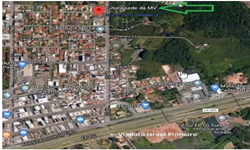

| Home | Quem somos | Contato | |
Quem somos
Fundada em 1993 por um grupo de jovens palmeirenses, a subsede da Torcida MANCHA
VERDE se firmou no Distrito Federal
desenvolvendo caravanas para assistir aos jogos do PALMEIRAS, tornado-se constante a presença do
Palmeirense do DF e entorno
nos estádios brasileiros e até fora do país, a torcida se reunia para poder acompanhar o PALMEIRAS.
A MVDF está situada na Rua 03, nº 84, Vicente Pires, Brasília/DF, Cep 72005-770.  5 Motivos para ser um torcedor Palmeiras
ObjetivosA Mancha Verde está presente em Brasília desde 1993, e sempre pensou grande. Sempre nos reunimos para assistir jogos, caravanas, e realização de eventos. Nossas atitudes são condizentes com a grandeza da Sociedade Esportiva Palmeiras. Para a Mancha, ser grande não satisfaz. Queremos sempre evoluir e é com esse foco que aqui hoje estamos na nova sede, em Vicente Pires! Somos atualmente a maior subsede de torcida organizada fora de seu estado de origem. |
|
Todos os direitos reservados |
|